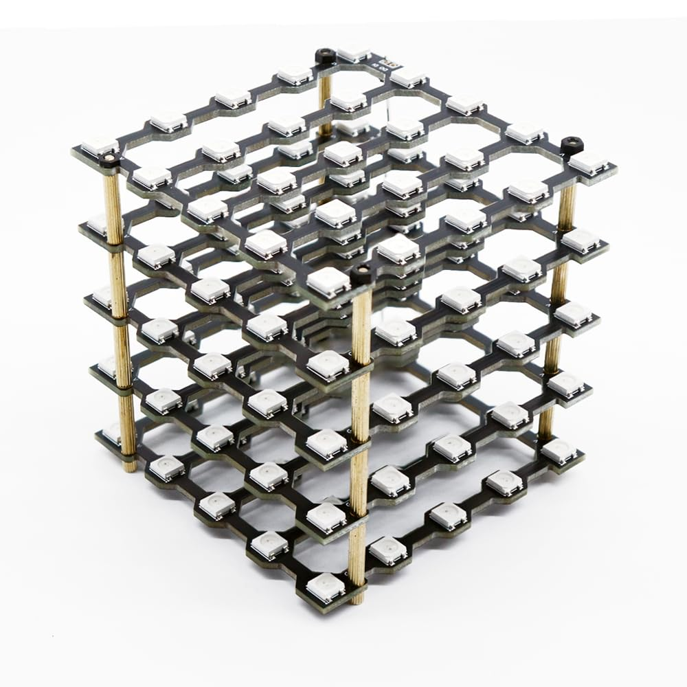
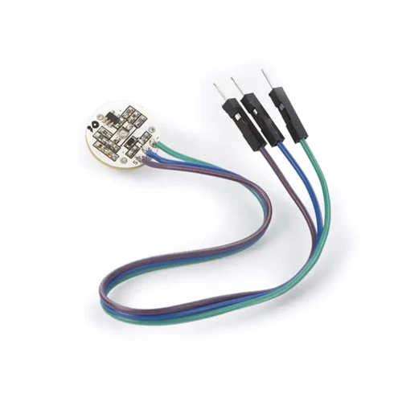
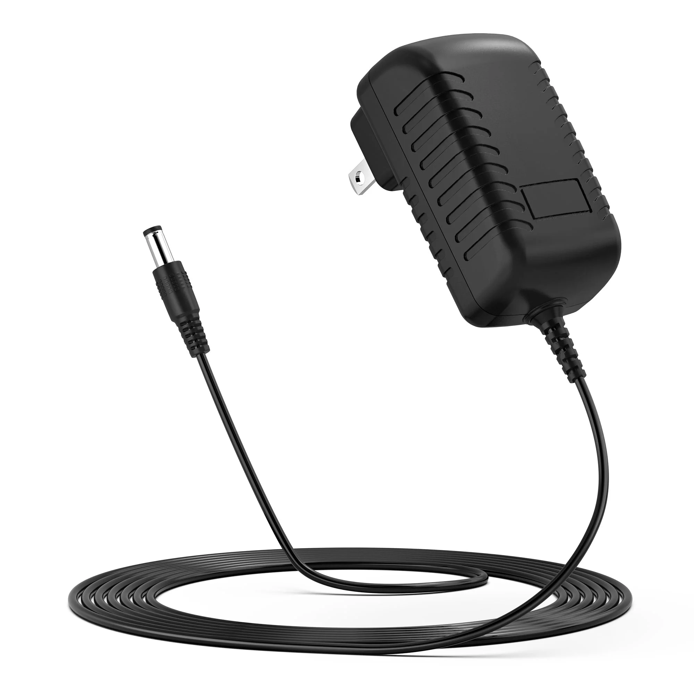

- 
- 
-

- 
By Reed Axtell
. *⠀ ⠀ ⠀✦⠀ * . . . . ˚ ﾟ . .⠀ ⠀⠀⠀⠀⠀⠀⠀⠀⠀⠀⠀, ✦⠀ ,
Through TouchDesigner and FastLED in Arduino IDE, the cube cycles through LED effect libraries, visualizes video input, and displays real time heartbeat data. This project offers a cost-effective way to explore programming 3D LED matrices.
˚ * .⠀ . . ✦⠀ , . ⠀⠀⠀⠀⠀⠀. ⠀⠀⠀✦ ⠀ ⠀ ⠀⠀⠀⠀⠀* ⠀⠀⠀. . ⠀⠀⠀⠀⠀⠀⠀⠀⠀⠀⠀⠀✦⠀⠀⠀ ⠀⠀⠀⠀⠀⠀⠀⠀⠀⠀⠀⠀⠀⠀⠀⠀⠀⠀⠀⠀⠀⠀⠀⠀⠀⠀⠀⠀⠀⠀⠀⠀⠀⠀⠀⠀⠀ ⠀⠀⠀⠀⠀⠀⠀⠀⠀⠀⠀⠀⠀⠀⠀⠀⠀⠀⠀⠀⠀⠀⠀⠀⠀⠀ ⠀ ⠀⠀⠀⠀⠀⠀. . ﾟ . . ✦ , . ⠀⠀⠀⠀⠀⠀⠀⠀⠀⠀⠀⠀⠀⠀⠀⠀⠀ * . . . ✦⠀ , * ⠀ ⠀ , ⠀⠀⠀⠀⠀⠀⠀⠀⠀⠀⠀⠀. ⠀ ⠀. ˚ ⠀ ⠀ , . . *⠀ ⠀ ⠀✦⠀
⠀⠀⠀⠀⠀. ⠀⠀⠀✦ ⠀ ⠀ ⠀⠀⠀⠀⠀* ⠀⠀⠀. . ⠀⠀⠀⠀⠀⠀⠀⠀⠀⠀⠀⠀✦⠀⠀⠀ ⠀⠀⠀⠀⠀⠀⠀⠀⠀⠀⠀⠀⠀⠀⠀⠀⠀⠀⠀⠀⠀⠀⠀⠀⠀⠀⠀⠀⠀⠀⠀⠀⠀⠀⠀⠀⠀ ⠀⠀⠀⠀⠀⠀⠀⠀⠀⠀⠀⠀⠀⠀⠀⠀⠀⠀⠀⠀⠀⠀⠀⠀⠀⠀ ⠀ ⠀⠀⠀⠀⠀⠀. . ﾟ . . ✦ , . ⠀⠀⠀⠀⠀⠀⠀⠀⠀⠀⠀⠀⠀⠀⠀⠀⠀ * . . . ✦⠀ , * ⠀ ⠀ , ⠀⠀⠀⠀⠀⠀⠀⠀⠀⠀⠀⠀. ⠀ ⠀. ˚ ⠀ ⠀ , . . *⠀ ⠀ ⠀✦⠀ * . . . ⠀ . ˚ ﾟ . .⠀ ⠀⠀⠀⠀⠀⠀⠀⠀⠀⠀⠀, * ⠀. . ⠀✦ ˚ * .⠀ . . ✦⠀ , . ⠀⠀⠀⠀⠀⠀. ⠀⠀⠀✦ ⠀ ⠀ ⠀⠀⠀⠀⠀* ⠀⠀⠀. . ⠀⠀⠀⠀⠀⠀⠀⠀⠀⠀⠀⠀✦⠀⠀⠀ ⠀⠀⠀⠀⠀⠀⠀⠀⠀⠀⠀⠀⠀⠀⠀⠀⠀⠀⠀⠀⠀⠀⠀⠀⠀⠀⠀⠀⠀⠀⠀⠀⠀⠀⠀⠀⠀ ⠀⠀⠀⠀⠀⠀⠀⠀⠀⠀⠀⠀⠀⠀⠀⠀⠀⠀⠀⠀⠀⠀⠀⠀⠀⠀ ⠀ ⠀⠀⠀⠀⠀⠀. . ﾟ . . ✦ , . ⠀⠀⠀⠀⠀⠀⠀⠀⠀⠀⠀⠀⠀⠀⠀⠀⠀ * . . . ✦⠀ , * ⠀ ⠀ , ⠀⠀⠀⠀⠀⠀⠀⠀⠀⠀⠀⠀. ⠀ ⠀. ˚ ⠀ ⠀ , . . *⠀ ⠀ ⠀✦⠀ * . . . . ˚ ﾟ . .⠀ ⠀⠀⠀⠀⠀⠀⠀⠀⠀⠀⠀, ✦⠀ ,